NASA: Dragonfly Rotor Blade Optimization
Dragonfly Overview
With the success of the Ingenuity helicopter flying on the surface of Mars NASA has developed an increased desire to utilize autonomous rotorcraft to explore the solar system. In furtherance of this goal the Dragonfly rotorcraft was pitched to NASA by the Johns Hopkins University Applied Physics Laboratory (APL) as a large autonomous vehicle that could explore the surface of Titan, Saturn's largest moon. The science goal of the mission is to continue NASA's search for signs of extraterrestrial life by flying to multiple points of geological interest on Titan's surface and collecting samples. The idea is to then examine these samples to determine the habitability of Titan's environment, examine how far prebiotic chemistry has advanced, identify compounds of astrobiological interest, and search for chemical indicators of life.
The rotorcraft will achieve this mission over the course of 3.3 years with the rotor craft navigating Titan's surface through a series of short hops followed by a period of recharging. The vehicle itself will be nuclear powered with the radioactive decay of plutonium charging a high capacity lithium ion battery. The flight itself relies on power from the battery, granting a total flight time of 30 minutes with it taking 1-2 Titan sols (16 Earth days) to fully recharge the battery with the nuclear reactor. Due to the crafts relatively low flight times and long recharge times, it is imperative that the rotorcraft can travel a large range in that time. This illustrates the importance of the rotatorcraft being able to achieve efficient flight in Titan's atmosphere to enable the success of the mission.
While the bulk of the design and management of the Dragonfly mission is handled by APL, a certain component of the design process is done in conjunction with certain NASA sites and other industry partners. Specifically the Computational Physics Branch of the NASA Advanced Supercomputing Division at NASA Ames Research Center handles most of the computational fluid dynamics (CFD) analysis for the mission utilizing NASA's Pleiades supercomputer. I interned in this branch during the summer in between my sophomore and junior year and the following fall of my undergraduate degree where I was tasked with a research project the branch was conducting to increase the aerodynamic efficiency of Dragonfly's rotor blades in Titan's atmosphere. This was to be done by combining mid and low fidelity, 2D and 3D aerodynamic optimization techniques with high fidelity analysis to design a set of drag optimized blades for the Dragonfly rotorcraft.
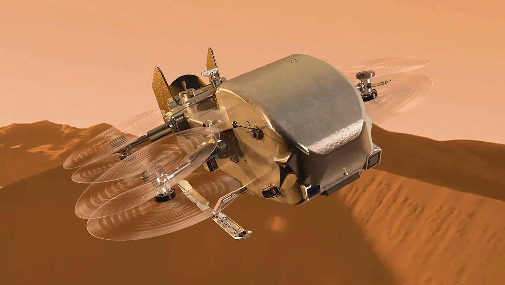
2D Airfoil Optimization
For this research I was tasked with building a pipeline for creating drag efficient rotor blades starting from the design of the airfoils the blades were made up of. Since I inherited this research project from a previous NASA employee much of the 2D components of this pipeline had already been set up. To develop a set of drag efficient airfoils the discrete adjoint aerodynamic shape optimizer DAFoam was utilized. This software is an augmented version of the CFD software OpenFoam that integrates an optimization loop as well as parameterized shape deformation methodologies allowing it to change the shape of an airfoil to optimize for imp[roved aerodynamic properties. It does this by implementing a set of free form deformation (FFD) point pairs along the chord of the airfoil that the optimizer can stretch or squeeze thus altering the shape of the airfoil. IT also allows the user to implement constraints such as minimum thicknesses, volume constraints, fixed lift constraints, etc to allow for the tuning of the optimization process.
The goal of this stage of the optimization process was to create a set of drag efficient airfoils at different points along the span of Dragonfly's blades with the idea being that these airfoils could be combined in a way that creates an 3D optimized whole. As such each airfoil needed to be optimized for the local conditions, namely velocity, it would experience at that particular span of the blade. Therefore the velocity setpoint used for each optimization run was determined from the rotational speed of the rotor blades and the local span radius that airfoil was located at. Additionally, I utilized DAFoam's multipoint optimization configuration at each of these points which allows the solver to optimize airfoil geometries across a prescribed set of conditions with user inputted weights deciding the importance of each condition resulting an a geometry that achieves efficient flight over a wider range of operating conditions. In this case, 6 operating points were utilized each representing a different angle of attack with the weights being described as a Gaussian distribution about local twist angle of the current Dragonfly blades. Depending on the location of the airfoil either an incompressible or compressible solvers was used as the the incompressible threshold used by DAFoam is smaller than the usual Mach 0.3 threshold. Finally a set of 6 FFD point pairs were used allowing for fine control of the airfoil geometry by the solver.
Each run was configured as a fixed lift optimization where the CL of the airfoil was set to be constant and the objective of minimizing the CD was given to the optimizer. This was done with a set of geometric constraints also being set on the runs namely a constraint placed on the distance between any two FFD pairs and a constraint on the total volume of the airfoil. The thickness constraint was configured as a percentage of the original FFD pair thickness with a constraint of 90% meaning that the minimum thickness between any FFD pair would be 90% of the original thickness. The volume constraint was set as a fixed constraint with the total volume of the original and optimized versions of the airfoil being forced to remain constant. These optimization runs were set up and submitted to the Pleiades supercomputer utilizing Linux terminal with each attempt taking approximately a day to run.
The post processing of optimization results was also done via DAFoam by bypassing the optimizer and running the base OpenFoam solvers on the airfoil for a -20 to 20 angle of attack sweep at the already determined operating velocity. These sweeps were performed for both the original and optimized geometries creating a set of curves that could be used to compare the performance of the airfoils. In particularly the CL vs CD polars and L/D curves were utilized for comparison with an average CD percent change also being generated by taking a weighted average of the drag difference at every operating point with the original multipoint optimization weights being utilized as the weights for the average.
Utilizing this methodology over the summer three airfoils were optimized for the 17%, 50%, and 80% span locations representing a root, mid-span, and tip case. These three airfoils collectively saw a minimum 3% decrease in average drag with most of these reductions occurring near the center angle of attack defined during the multipoint process. Additionally during the fall portion of my internship an additional 6 airfoils were optimized at points spaced in between the original three airfoils resulting in a total of 9 airfoils being created during my internship.
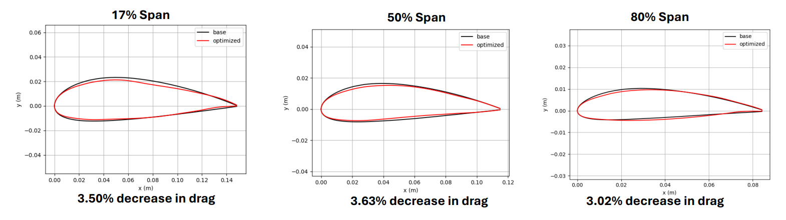
3D Blade Optimization
While DAFoam can handle 3D optimization problems the process takes a large amount of compute and can result in large wait times between iterations. As such to minimize the computational requirements of 3D optimization I decided to make my own optimization script by combining the blade element momentum (BEM) solver CCBlade with the optimizer SNOPT to create rotor blades with optimal chord and twist distributions across its span. Blade element momentum theory is a solution method commonly used for wind turbines and rotor crafts that combines momentum control volume analysis with airfoil analysis at the same span radius. These two methods are combined and computed simultaneously allowing the solver to calculate thrust, torque, and other parameters of the rotor blades. The CCBlade library itself consists of a set of solver functions written in Julia that solves the BEM equations for different blade configurations. This starts with defining an airfoil objects which consists of multiple aerodynamic lookup tables indexed by Mach and Reynolds number and splined together allowing the solver to determine these coefficients for every span location. THis is then fed into the solver along with the rotor blade's operating conditions and is able to spit out overall rotor blade operating parameters.
With this solver pipeline made I then wrapped it inside of an optimization framework utilizing SNOPT. This framework takes an initial chord and twist distribution, calculates the objective function which in this case was maximizing figure of merit (FM), and then evaluates the value of FM utilizing it to march towards a new twist and chord distribution after which the process repeats until the optimizer funds a valley in the solution space. I also implemented a set of constraints in the optimizer namely constraints on how much the optimizer is allowed to alter the twist and chord as a function of original chord and twist distribution. The flow of this optimizer is outlined in the flow chart to the right.
This optimizer does have limits that are important to mention. One such limitation is that the BEM method does not use viscosity and as such the optimizer ignores parasitic drag and cannot predict stall outside of what is captured in the CFD generated coefficient data. Additionally, and more importantly, this type of solver can only handle hover cases and does not have the corrections needed to understand forward flight. This means that it can only optimize geometries for very specific flight conditions and would need to have custom correctional factors developed if it were to be expanded to handle forward flight.
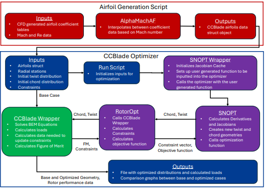
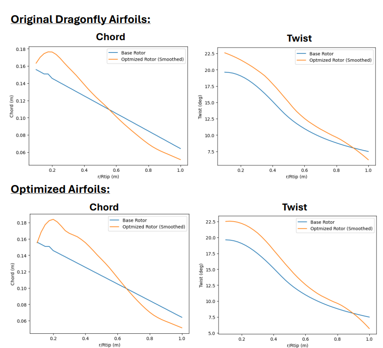
During the summer portion of my internship a total of two rotor blade geometries were created using the 3D optimizer. One blade was created utilizing the original un-optimized Dragonfly airfoils but with an optimized chord and twist distribution. THe second blade was created using both the three original optimized blades along with a separately optimized twist and chord distributions.
These optimization runs produced similar geometries which revealed some interesting characteristics about the optimizer itself. As can be seen, for the chord the optimizer prioritized having larger chord lengths at the root of the blade while tapering out the chord as it gets closer to the tip. The optimizer appears to want to make the tip chord as small as possible with the solver hitting the lower bound constraints in both cases. The reason for this is most likely the optimizer attempting to create a closer to uniform lift distribution across the blade by compensating for lack of speed at the root by increasing the chord and an excess of speed at the tip with reducing the chord. This same trend can be observed with twists with higher twist angles at the root and smaller twist angles at the tip. This is most likely attempting to do the same thing as higher twist angles result in higher lift across all speeds as long as stall is avoided. This behavior stems largely from the nature of using figures of merit as the objective function. Figure of merit is a widely utilized measure of efficiency for helicopters and rotordraft that captures the ratio of the thrust generated to the torque needed by the engine/motor to achieve that thrust. This is done so by examining a weighted ratio of these forces' coefficients with the formula being the coefficient of thrust to the power of 3/2 divided by the square root of two times the coefficient of torque. In this way FM actually gives more priority to increasing thrust vs decreasing torque explaining why the optimizer would prioritize altering the lift distribution over reducing drag directly.
The final step of this workflow was to verify the results of the low-fidelity 3D optimizer with high fidelity CFD utilizing NASA's OVERFLOW solver. This was done by one of my fellow intern colleagues for a hover case mimicking the conditions both the airfoils and 3D geometry was optimized for.
As mentioned before two optimized blades were made as a part of my summer research with the first blade that contained the unoptimized airfoils being made to verify that the optimizer was working as intended. Initial post processing analysis in CCBlade suggested that the new optimized blade achieve a little over a 3% increase in FM compared to the completely optimized blade. Based on the nature of the CCBlade solver this was known to be an overestimate however I wanted to know how much of an overestimate that value was. The OVERFLOW simulation revealed that the optimized blade actually achieved a near 2.5% increase in FM, only a 0.5% difference from what CCBlade predicted. This indicated that the 3D optimizer I developed was working as intended and was capable of creating truly increased efficiency blades despite utilizing a low fidelity methodology.
The second blade that was generated was meant to test whether the complete 2D-3D optimization pipeline was working as intended. Unfortunately due to time constraints for the summer it was unable to be fully analysed in OVERFLOW and was only able to be analyzed utilizing the CCBlade solver. Given the fairly close alignment of the percent differences between the CCBlade and OVERFLOW simulations of the previous geometry it was deemed that this analysis was acceptable until a full OVERFLOW simulation could be run. This analysis revealed that when compared to the base Dragonfly rotor blade design the fully optimized blade underperformed by a fairly large margin. It did however perform over 4% better than the blade that contained the optimized airfoils but the base chord and twist distribution. This indicated that the 3D optimizer was still working as intended but something was going wrong with how the optimized airfoils were being integrated with the 3D optimization pipeline. Upon examining the process I identified the most likely source of the shortcoming was during the airfoil object creation phase. Since there are only three airfoils and the CCBlade solver relies on interpolating between airfoils to make its calculations, it is entirely possible that for span locations not near one of these airfoils the interpolated coefficient values are completely unrealistic. This could then result in the overall calculated performance to be much lower than it should be than if the blade was made up of more airfoils for the interpolator to interpolate between. As such, to remedy this issue the focus of my fall research was to generate more airfoils to feed into the 3D optimizer to hopefully remedy this issue, resulting in the 6 additional airfoils being created as previously mentioned.
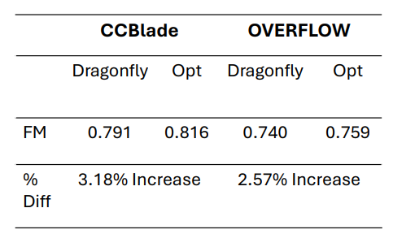
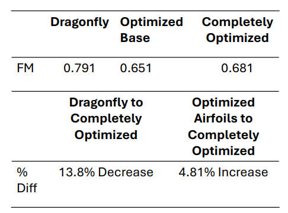
Summer Research Poster
Below is the poster that I presented at the end of the summer portion of my research. The power itself covers everything mentioned above that occurred over the summer and was present both to staff at NASA Ames Research Center and to students during the UC Berkeley NASA summer scholars showcase.
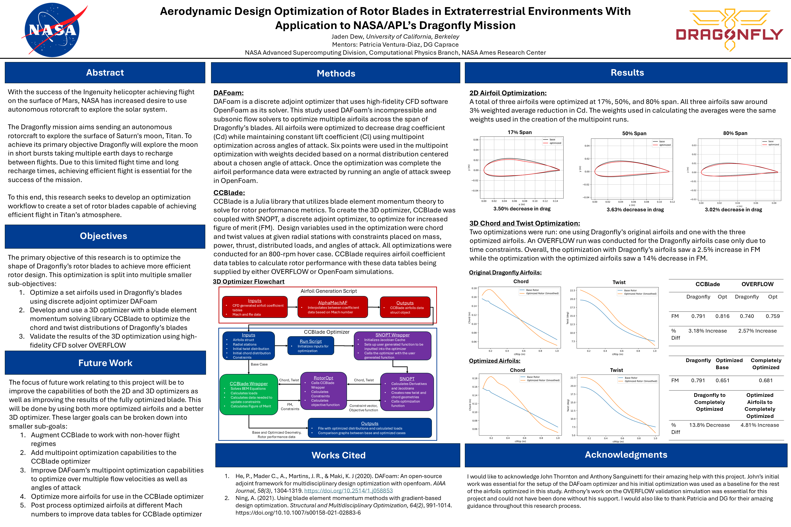
Gallery
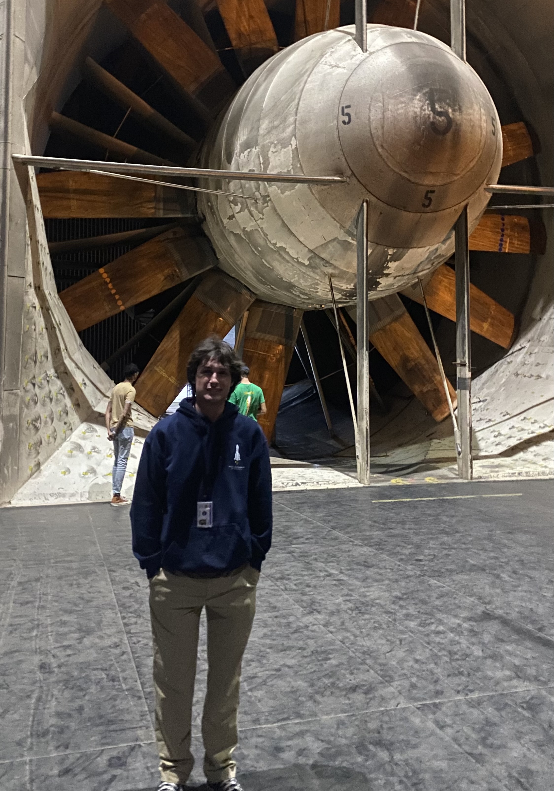
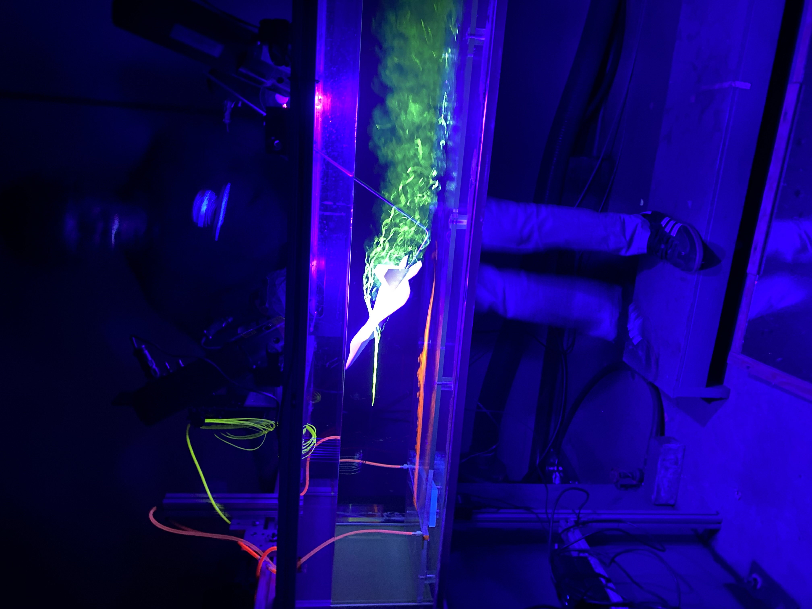
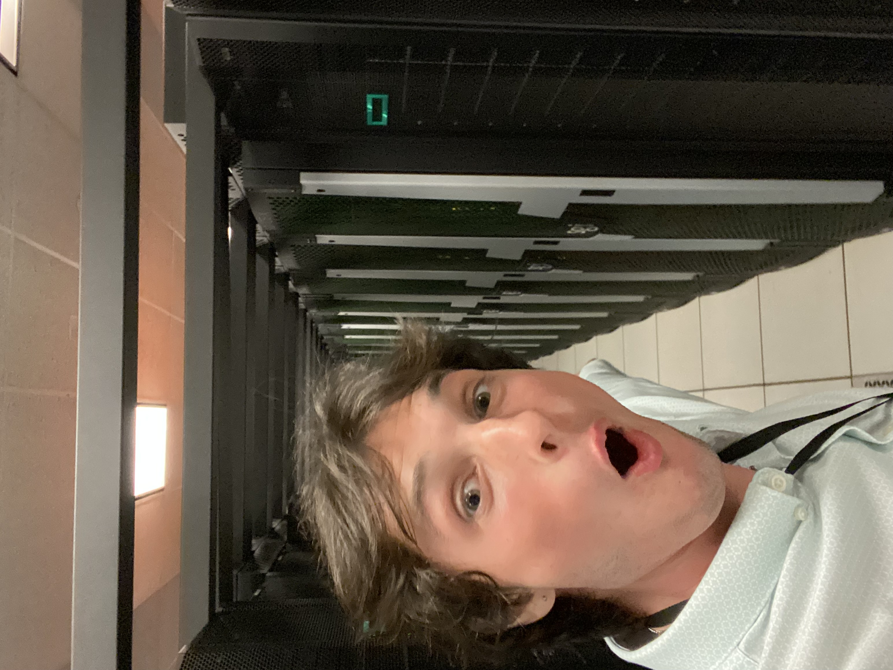
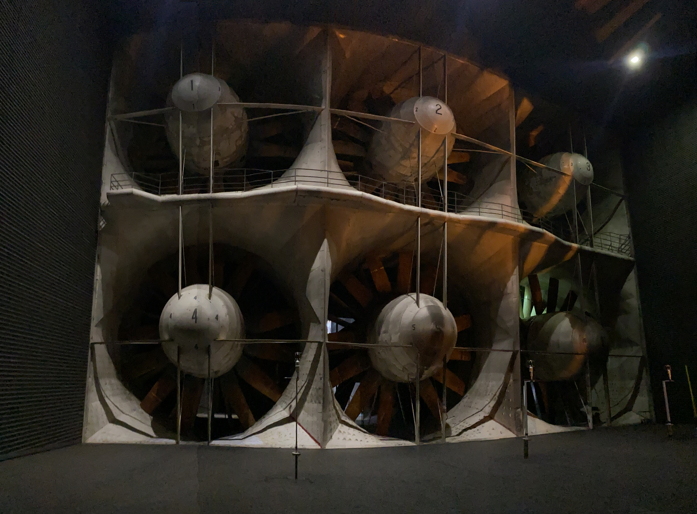
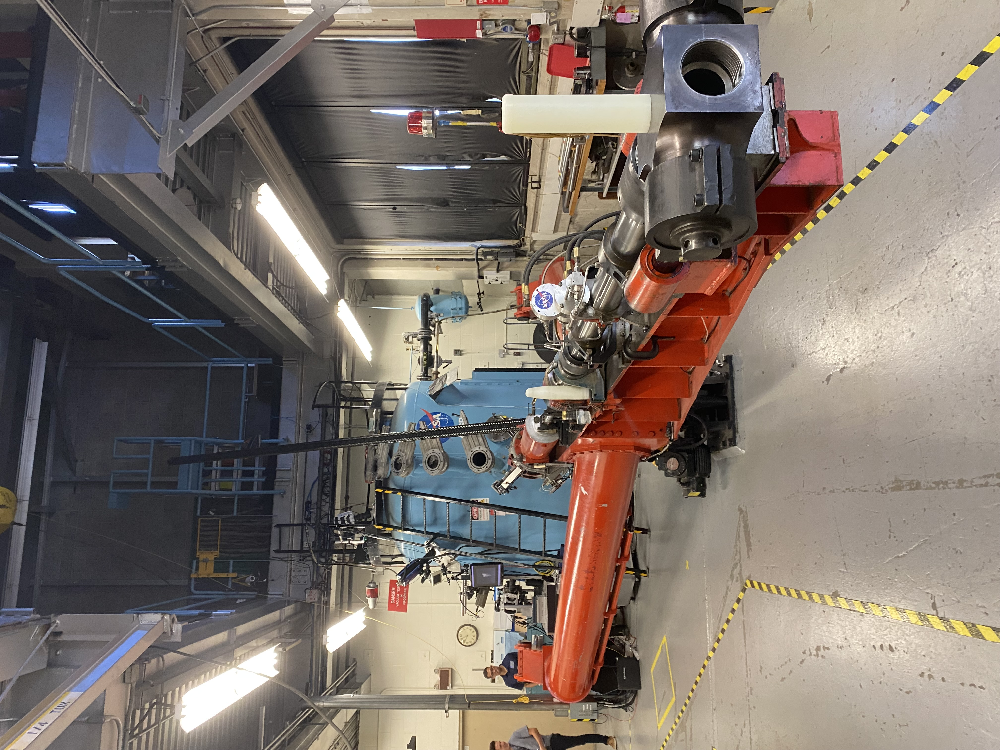